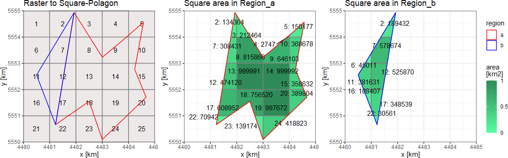

Extract TimeSpatData to TimeVectData.
The theory is same as terra::extract, TimeVectData or TimeRastData will be extracted using a weighted average in the given polygons (mask_area).
The weight will be calculated based on the area of the polygons or raster cells within the mask_area.
NOTE: this function can only be used for values that make sense in weighted average.
 \[\vec{\Omega}_{[time,region]} = \vec{A}_{[time,grid]} \cdot \vec{W}_{[grid,region]}\]
Where \(\vec{\Omega}_{[time,region]}\) is the area mean of each EZG (mat_value_region),
\(\vec{A}_{[time,grid]}\) are the Grid values for each time step (mat_value)
and \(\vec{W}_{[grid,region]}\) is the area fraction between each cell in the RU (mat_weight).
extract_tsd(tsd_Data, mask_area)
# S3 method for TimeVectVariable
extract_tsd(tsd_Data, mask_area)
# S3 method for TimeVectArray
extract_tsd(tsd_Data, mask_area)
# S3 method for TimeVectLayerVariable
extract_tsd(tsd_Data, mask_area)
# S3 method for TimeVectLayerArray
extract_tsd(tsd_Data, mask_area)
# S3 method for TimeRastVariable
extract_tsd(tsd_Data, mask_area)
# S3 method for TimeRastArray
extract_tsd(tsd_Data, mask_area)
# S3 method for TimeRastLayerVariable
extract_tsd(tsd_Data, mask_area)
# S3 method for TimeRastLayerArray
extract_tsd(tsd_Data, mask_area)TimeSpatData data
TimeVectVariable
TimeVectArray
TimeRastVariable
TimeRastArray
(SpatVector) Polygons, from terra::vect()